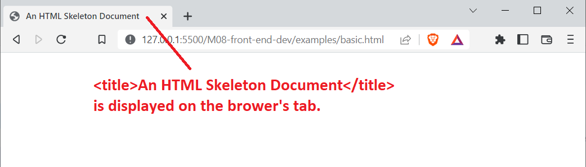

Hypertext Markup Language (HTML) is the language used by web browsers to display content, include external resources, and embed metadata. HTML is code. The browser interprets this code to present media, format text, and position content. HTML is a structured language. It has hierarchy. For example, a small image can be included inside a link, which can be included inside a navigation dropdown, which can be included inside a navigation bar.
HTML represents elements. Elements may be nested. Elements are structured with tags. A tag is a bit of code with a name. Elements that support nesting have an opening tag and a closing tag. Elements that don't support nesting have a single opening tag. Tags may include attributes.
See the Pen HTML Intro by Corbin March (@corbos) on CodePen.
But before we dive into HTML, we cover web accessibility. Web accessibility is the goal and practice of making the web usable for every person in the world. It's an important and lofty goal. Web accessibility strategies vary from reducing bandwidth requirements to making web content easy to navigate with our eyes, ears, and touch.
A bare minimum web accessibility strategy uses semantic HTML and WAI-ARIA (Web Accessibility Initiative - Accessible Rich Internet Applications) attributes. Semantic HTML is a subset of elements with meaningful names. Names like "address", "article", "footer", and "figure" are meaningful. Names like "div" and "span" are not. Semantic HTML allows screen readers to communicate the context of the content they're announcing. WAI-ARIA attributes give even more context to HTML elements.
When you've finished this lesson and its exercises, you should be able to:
Web accessibility is the practice of making the web usable for all people. In the Convention on the Rights of Persons with Disabilities (CRPD), the United Nations ratified web accessibility as a fundamental human right. Many countries have web accessibility laws, especially related to content used for education, health care, and government. Since the web is increasingly used for essential services, everyone has the right to access those services.
Web accessibility creates ease-of-use for people with differing levels of:
But web accessibility is important for everyone.
Remember back to a time when you had a spotty internet connection and a resource-intensive web site wouldn't load. Web accessibility standards would help with that. An accessible website pushes web trackers to the background and limits the data downloaded at one time. Now think of all the people in the world who don't have broadband internet or no internet at all. This is especially prevalent in rural areas.
What about a time when you injured your finger, wrist, elbow, or shoulder? That injury makes it difficult to use a mouse or trackpad. Web accessibility standards would help with that. An accessible website provides alternative navigation strategies. Everyone will have physical limitations during their lifetime.
What if you forgot your headphones at work and need to watch a training video? Web accessibility standards would help with that. An accessible website offers video captions so we don't miss the audio or interrupt our coworkers.
Web accessibility benefits everyone. It makes the web easier to navigate, easier to understand, and easier to use on a variety of devices and in different environments.
We start with web accessibility before HTML because we have lots of accessibility tips embedded in the HTML content. Let's get to it!
If you haven't already, download and install VS Code.
If you haven't already, install the Live Server extension in VS Code.
If you're unfamiliar with installing VS Code extensions, review the Install Visual Studio Code extensions documentation.
Add a [your-dev10-classwork-directory]/week-07/work/ directory (or create an alternative directory anywhere on your machine).
Add an html-accessibility directory to week-07/work.
Open the html-accessibility directory with the "Open Folder" option in VS Code.
HTML is a markup language. Markup languages provide structure. They don't provide common programming language features like conditional statements, looping statements, and functions. In markup documents, content is "marked up" to accentuate text, embed media, and create a layout.
Consider the following text content.
Chapter 1
It was a dark and stormy night.
In a text editor, we might format the chapter line as a heading and give the remaining content some breathing room. In HTML, we must add formatting explicitly with tags.
<h1>Chapter 1</h1>
<p>It was a dark and stormy night.</p>
The chapter line is marked up with an <h1>. This creates a level 1 header element. The remaining content is marked up with a <p>, which creates a paragraph element.
HTML represents elements. Elements are defined with named tags.
Elements that may contain content are defined with an open tag and a close tag. The open tag is a less than symbol (<), the element name, and the greater than symbol (>). The close tag is the less than symbol, a forward slash (/), the element name, and the greater than symbol.
Generically: <tag>Content</tag>.
Example
<p>Rapini is also called broccoli rabe.</p>
Elements that cannot contain content, called void elements, are defined by a stand-alone open tag.
Generically: <tag>
Examples
<img>
<hr>
<input>
<br>
HTML elements may contain zero to many attributes. Some elements are useless without them. Attributes are defined before the greater than symbol in the open tag (<tag attributes="go here">Content</tag>). An attribute has a name and a value. Its syntax is: name, the equals symbol (=), a quote (single or double), a value, and another quote (must match the previous single or double).
Generically: <tag attr="value" pi="3.14">Content</tag>.
Example
<a href="https://xkcd.com/" title="xkcd">xkcd</a>
Do not add whitespace to attribute assignments:attr = "value".The browser will likely interpret it correctly, but it's not idiomatic HTML.Tighten it up with:attr="value".
A boolean attribute is an attribute that is either present (true) or not (false). A boolean attribute's name and value must match.
<!-- required is a boolean attribute.
By including it, we make this input's value required.
If we didn't include it, the input's value is not required. -->
<input id="name" required="required">
<!-- disabled is a boolean attribute.
By including it, we make the button un-clickable.
If we didn't include it, the button is clickable. -->
<button type="submit" disabled="disabled">Save</button>
Alternatively, omit the value all together. Some coding standards prefer this. The browser interprets required="required" and required as exactly the same thing.
<input id="name" required>
<button type="submit" disabled>Save</button>
If an element may contain content, it can include zero to many child elements. If a child element may contain content, it can also include zero to many child elements. In this way, we build up complex user interfaces represented as a hierarchy or tree.
Simple Example
See the Pen Mithridatism by Corbin March (@corbos) on CodePen.
A More Complex Example
See the Pen HTML - Add a Task by Corbin March (@corbos) on CodePen.
Now that we have some context for elements, attributes, and nested elements, let's explore the basic structure of an HTML document. Browsers are incredibly forgiving. They do their best when parts of the basic skeleton below are missing. Don't omit them, though. It isn't idiomatic HTML.
HTML Document Skeleton
<!DOCTYPE html> <!--DOCTYPE is special-->
<html lang="en"> <!--open html tag: the html element is the entire doc.-->
<head> <!--open head tag: content in the head element is never shown
in the browser's view. It contains metadata that tells the browser how
to display elements in the body element.-->
<meta charset="UTF-8">
<meta name="viewport" content="width=device-width, initial-scale=1.0">
<title>An HTML Skeleton Document</title> <!--A nested title element-->
</head> <!--close head tag-->
<body> <!--open body tag: the body element contains elements displayed
in the browser's view.-->
<!--
All of our viewable HTML goes here!!!
=====================================
-->
</body> <!--close body tag-->
</html> <!--close html tag-->
VS Code
Create an HTML document named index.html in VS Code. Paste the HTML Document Skeleton into the document. Alternatively, create a blank index.html document, type the exclamation character (!), then press tab. VS Code supports Emmet commands.
Emmet is an editor plugin that improves our HTML and CSS workflow. It allows us to type short commands that generate verbose HTML. Emmet has a cheat sheet with common commands.
Let's zoom into details.
An HTML comment is a less than symbol, an exclamation symbol, two dashes, comment content, two dashes, and a greater than symbol. HTML comments can span multiple lines.
<!-- a single line comment -->
<!-- this is
a multiline
comment -->
Comments are ignored by the browser. They are useful when we want to communicate our intent to another developer.
Be sure to read the comments in the HTML Document Skeleton.
A document type declaration, or DOCTYPE, is a bit of markup that tells a browser how to interpret the HTML code that follows.
Back in the bad old days, there were DOCTYPEs for different versions of HTML, DOCTYPEs for XML-formatted code versus HTML-formatted code, and even DOCTYPEs for how "strict" a browser should evaluate the code.
Luckily those days are gone. We no longer need varying DOCTYPEs. <!DOCTYPE html> is all that's required.
html ElementThe html element is the root element in our document. It is the parent of all other HTML elements. It can have one and only one head element and one and only one body element.
The html element isn't strictly required. We can omit it. That's an incredibly bad idea, however, if for one reason: the html element includes a lang attribute, and that lang attribute is important for web accessibility. When we specify the language, screen readers are able to understand which language should be announced.
<!-- Here, the language is English.
We can narrow down to any language, region, or dialect. -->
<html lang="en">
</html>
head ElementThe head element contains elements that are not rendered to the browser's view. All head elements are metadata. They tell the browser how to interpret and render elements in the body. They include the title element, stylesheets, scripts, and meta elements.
The head element can range from simple to complex. See all of the possible options at https://htmlhead.dev/.
title ElementThe title element can contain text only. All child HTML elements are ignored. The text content is displayed in a browser's tab or its title bar.
The title is also important for web accessibility. Every view or page should have a unique title. The title should declare the view's primary purpose, followed by the site's name.
body ElementThe body element is the displayed document root. It's the document's rendered structure. It's possible to move things around with CSS, but for the most part we want to make our HTML structure match what's rendered. Again, this helps with web accessibility. A screen reader wants to work top to bottom. If we move the bottom to the top with CSS, the bottom will be read last.
The body element has many attributes. Many are event handlers: a function that responds to changes to the state of the body. Others attributes define how the body is displayed. Don't use the body's display attributes! Use CSS instead.
By default, the browser uses flow layout. Flow layout renders top to bottom and has two different behaviors depending on the element. Elements come in two varieties:
VS Code
In the samples below (all of them), paste the example HTML into the <body></body> element. Preview the document with your browser either using Live Server or opening the file directly.
If needed, review the Live Server launch documentation.
In flow layout, a block-level element fills the width of its parent and has a height bounded by its content. If a block element follows another block or inline element, it breaks to a new line. Block elements stack on one another.
Below, h1, p, blockquote, section, and h2 are all block-level elements.
Example
See the Pen HTML - Block Elements by Corbin March (@corbos) on CodePen.
In our example above, note that the browser has different default styles for block elements. Block elements have predefined margins. The blockquote's left margin is absolutely huge!
h1-h6Heading elements are block-level elements that divide our document into a logical structure with a hierarchy. Headings help users gauge the structure and organization of our document.
Another way to think about headings is a textbook.
h1 is the book's title.h2 are the chapter titles.h3 are topic sections in a chapter.h4 are subtopics in a section.Depending on our HTML document, we may never use h5 or h6.
Headings are important for accessibility. Users with cognitive disabilities are better able to navigate our document. Users with screen readers can listen to a list of headings, jump to a heading, and start reading from there. And all users will appreciate the ability to locate salient content quickly.
Headings are semantic elements.
pThe paragraph element separate blocks of text like, uh, a paragraph. By default, browsers put a line break between paragraphs to give them vertical white space.
Breaking the page into paragraphs helps with readability and accessibility. Screen readers can navigate through content easily. All users appreciate easy-to-digest text chunks.
Never use empty paragraphs to add vertical spacing between content. Screen readers hate this. If we need extra white space, use the CSS margin property.
Paragraph is a semantic element.
divThe content division element is a generic block-level container. As a block-level element, it fills the width of its parent. Other than that, the browser applies no style unless modified by CSS.
This may not sound useful, but the div element is popular for presentation and layout. We can add borders and background color to display messages, set up multiple column content (like a 3-column, newspaper-style layout), and show and hide content depending on the screen size.
Content division is not a semantic element. Don't use a div when a more semantic element is appropriate. Content divisions are for presentation only.
preThe preformatted text element displays content exactly as it's written in the HTML file. It honors all whitespace. This makes it ideal for displaying things like source code where tabs and indentation matter.
Preformatted text is not strictly a semantic element. It tells us how something is formatted (presentation) but not what's included (function). To include source code with pre, wrap it inside the <code> element.
blockquoteThe block quotation element separates quotes from the surrounding context. Use the cite attribute to provide a link to the source. Use the cite element to reference a specific work.
<figure>
<blockquote cite="https://www.goodreads.com/work/quotes/1094555-ghostwritten-a-novel-in-nine-parts">
<p>The human world is made of stories, not people.
The people the stories use to tell themselves are not to be blamed.</p>
</blockquote>
<figcaption>― David Mitchell, <cite>Ghostwritten</cite></figcaption>
</figure>
Block quotation is a semantic element.
ul, ol, and liThe unordered list element renders items in a list with bullets unless altered by CSS.
The ordered list element renders items in a list with sequential numbers or letters unless altered by CSS.
The list item element represents items in a list. List items may only be children of ul, ol, or menu.
See the Pen HTML - Lists by Corbin March (@corbos) on CodePen.
Lists are semantic elements. They represent both presentation and function. A screen reader will understand a list of items and if they're ordered (a series of steps) or unordered (a collection of things).
figureThe figure element calls out an image, diagram, source code, quote, poem, etc., from the main document flow. It may optionally include a caption. The figure, caption, and its contents are understood to be a cohesive unit.
<figure>
<img src="https://upload.wikimedia.org/wikipedia/commons/7/7e/Darkling_beetle.jpg"
alt="A Darkling Beetle">
<figcaption>A Darkling Beetle</figcaption>
</figure>
The figure element is a semantic element.
Content sectioning elements allow us to partition our document into larger logical chunks. It's a macro organizational method.
| Tag | Description |
|---|---|
<address> |
Wraps contact information for an individual or organization. |
<article> |
Wraps stand-alone content like a document, news item, or blog post. |
<aside> |
Wraps content indirectly related to the document's main content. Often styled as a sidebar or call-out. |
<footer> |
Can be used in any content sectioning root, including the document itself. Wraps content that may include author information, publish dates, links to documents, etc. |
<header> |
Can be used in any content sectioning root, including the document itself. Wraps introductory content: a logo, author information, a search form, etc. |
<main> |
Wraps the document's primary content or an application's primary feature. |
<nav> |
Wraps a navigation menu or structured navigation links. |
<section> |
Wraps a generic logical chunk of content. Call out the purpose of a section with a header. |
Content sectioning elements are semantic elements.
In flow layout, an inline element renders from left to right, right to left, both, or vertically, depending on the language. We call this a writing mode. Inline elements with line breaks in HTML don't create a new line. In fact, HTML text content with newlines doesn't render a new line either. Text content and inline elements flow without breaks until they wrap.
Below, strong, a, em, and span are inline elements.
Example
See the Pen HTML - Inline Elements by Corbin March (@corbos) on CodePen.
CSS
It's always possible to change block elements to inline and inline elements to block with CSS. It's also possible to remove an element from flow layout. We'll look at CSS soon. Know that we're not limited to stacking block elements. We can build sophisticated layouts with CSS.
aThe anchor element (otherwise known as a link) is a navigation workhorse. It can jump to a location within the current document, jump to a location defined by a relative URL, or jump to a location defined by an absolute URL. Links can open new tabs, open the default mail app, or dial a phone number on a mobile phone.
A link is relatively useless without the href attribute. href is short for Hypertext reference. The href attribute's value can be a URL, an email address, a telephone number, a data URL, or a media fragment.
<!--Navigates to the programming subreddit, an external site.-->
<a href="https://www.reddit.com/r/programming/">Programming Subreddit</a>
<!--Navigates to a relative URL in the current domain.-->
<a href="/admin/home">Admin UI</a>
<!--Navigates to the Darkling Beetle h2 (scrolls down) in the current document.-->
<a href="#darkling_beetles">Darking Beetles</a>
<!--Opens our default mail application and creates a new email. -->
<a href="mailto:support@example.com">Email Support</a>
<!--Depends on the device: calls the number on a mobile phone.-->
<a href="tel:+1.800.555.5555">Call Support</a>
<!--snip-->
<h2 id="darkling_beetles">Darking Beetles</h2>
<p>
Darkling beetle is the common name for members of the beetle family Tenebrionidae. The number of species in the Tenebrionidae is estimated at more than 20,000 and the family is cosmopolitan in distribution.
</p>
The link's target attribute can be used gain control over navigation.
<!--Navigates within the current tab. -->
<a href="https://example.com" target="_self">Go to example.com. (same tab)</a>
<!--Navigates in a new tab or window. -->
<a href="https://example.com" target="_blank">Go to example.com. (new tab/window)</a>
<!--If we're nested in an iframe (relatively rare),
navigates in the parent frame. If no parent, acts as "_self". -->
<a href="https://example.com" target="_parent">Go to example.com. (parent frame)</a>
<!--If we're nested in an iframe (relatively rare),
navigates in the topmost frame. If no topmost, acts as "_self". -->
<a href="https://example.com" target="_top">Go to example.com. (topmost frame)</a>
Links may contain child elements, though don't go too crazy. We don't want half of our document to be a clickable link. A sensible use case is a clickable image or icon.
<a href="https://en.wikipedia.org/wiki/Darkling_beetle" target="_self">
<img src="https://upload.wikimedia.org/wikipedia/commons/7/7e/Darkling_beetle.jpg"
alt="Go to the Darkling Beetle Wikipedia article.">
</a>
Screen readers are able to list all links, but it won't do any good if we don't know what we're clicking on. A link's contents should make it clear where the link is going, even without context.
<!--Bad context-->
<p>
You can find many good resources and a few bad opinions on the programming subreddit
<a href="https://www.reddit.com/r/programming/">here</a>.
</p>
<!--Good context-->
<p>
The <a href="https://www.reddit.com/r/programming/">programming subreddit</a> has many good resources
and a few bad opinions.
</p>
Use image/icon links sparingly since they also lack context. An image link should have alt text that describes its role as a link. It shouldn't describe the image.
strong, b, em, iThe strong element conveys a sense of urgency and importance.
The "bring to attention" element draws attention to content with no special sense of urgency. This was originally a presentation-only "bold" element.
The emphasis element stresses words or phrases.
The idiomatic text element highlights text that includes technical phrases, alternative voice, and thoughts (among other things). This was originally a presentation-only "italicized" element.
See the Pen HTML - strong, b, em, i by Corbin March (@corbos) on CodePen.
The strong versus b and em versus i distinction can be a little confusing. There are nuances. If you're confused, opt for strong instead of b and em instead of i.
I'm suspicious of promoting b and i as semantic elements. Earlier versions of HTML bolded text with b and italicized text with i. They had no semantic value. It wasn't until later that b and i became "semantic". My guess is this was a retroactive fix since b and i aren't going anywhere. There's still a lot of old HTML on the web.
There are additional text emphasis elements as well. Consider what might be appropriate.
mark highlights text for reference.dfn defines a term in the context of a phrase.kbd sets aside literal keys to press.spanThe content span element is a generic inline element with no semantic value. It is presentation-only.
The span can be made to be semantic by setting the ARIA role attribute. This is usually a bad idea. If our span has a role of img or button, then it should be converted to an img or button element.
Content span should only be used for visual presentation, and if something is worth emphasizing visually, it should probably be emphasized with a more semantic element.
Indent Your Code
While indents and line breaks don't change the browser's interpretation of our HTML, whitespace is important for readability and maintenance. Use a newline for block elements and indent child elements to clearly see the parent. Don't add newlines to inline elements which are meant to flow with the content.
Comment Your Code
Use comments to make your HTML easy to understand, not just now, but in the future. When another developer (or you!) needs to dust off the HTML and make a change, a few well-placed comments can make all the difference.
Use Semantic Elements
Semantics elements communicate intent. They add information about the content being presented that goes beyond the visual. This is essential for clarity and accessibility. It's also useful for search engines. Search engines scan our content for relevance and structure. Never choose an element for aesthetics over functionality. We can always change our style with CSS.
It's impossible to remember all HTML elements in this lesson, and it's even more impossible to remember elements we haven't learned. That's why it's crucial to reference appropriate elements in MDN's HTML element documentation. Scan the documentation. If you think an HTML element exists for a particular problem, say, video, do a quick web search. (There is. It's the video element.)
The elements in this lesson are a foundational start. Be curious. Find out what else is available.
Try this.
DOCTYPE, html, head, and body.